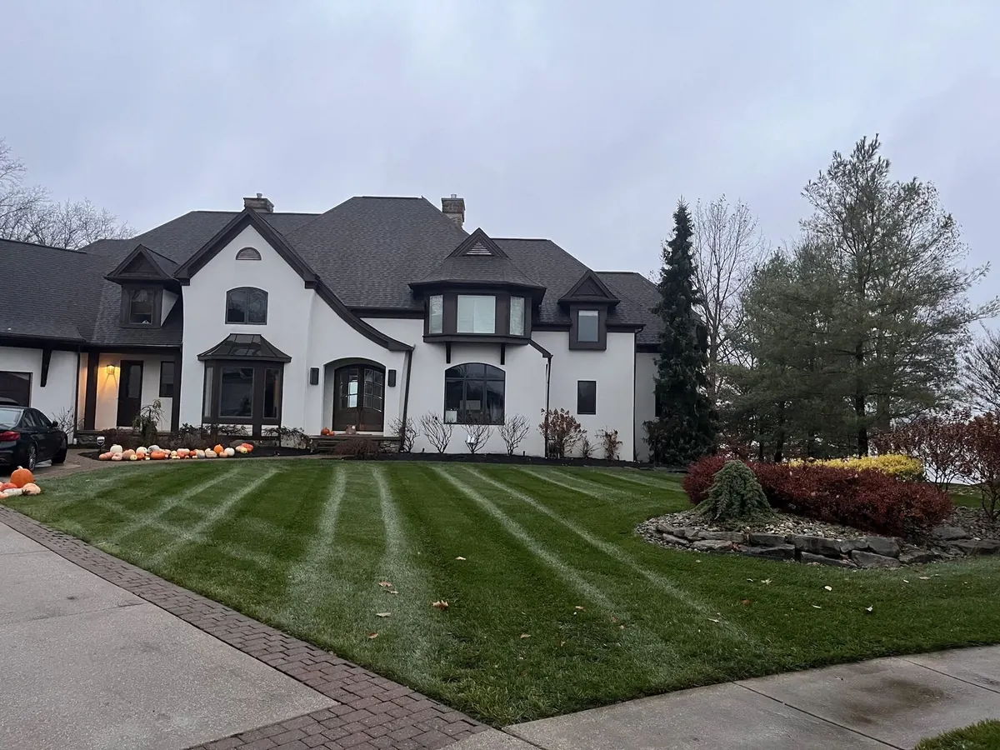

Vacancy clauses, the frozen-pipe condition that trips people up, and the questions to ask your agent before you head south.

Most homeowners assume their policy works the same whether they are home or in Florida. For a weekend, that is true. For three months, it very often is not — and the moment people discover the difference is usually while filing a claim.
This is a plain-English look at how insurers treat unoccupied homes, what documentation tends to matter, and what to ask your agent before you leave. We are a landscaping and home watch company, not insurance advisors, so treat this as a starting point for a conversation with your agent, not as coverage advice.
Insurance policies generally distinguish between the two, and the distinction matters.
Many standard policies contain a clause that changes coverage after a home has been unoccupied or vacant for a stated stretch, commonly somewhere in the 30 to 60 day range. What changes varies by carrier and policy. Some restrict specific perils; some reduce or exclude water damage; some require notification for coverage to continue at all.
The only reliable way to know your situation is to read your policy's vacancy provision and call your agent.
Frozen and burst pipes are the single largest winter claim category for unoccupied homes in cold climates, and it is where policy language tends to be strictest.
A common condition in cold-weather policies is that the homeowner must have either maintained heat in the building or shut off the water supply and drained the system. If a pipe bursts in a house where the heat had failed and the water was never shut off, an insurer may take the position that the condition was not met.
Insurers respond to evidence. A homeowner who can produce a dated record of regular property inspections — with photos, timestamps, and notes on what was checked — is in a materially different position than one relying on memory.
Documented inspections tend to help in three ways: they can support that reasonable care was exercised, they can narrow the window of when damage began, and they can demonstrate the problem was addressed promptly rather than left to worsen.
That third point carries real weight. Many policies expect the insured to take reasonable steps to prevent further damage after a loss. A leak found and stopped on a Tuesday visit is a very different claim from the same leak discovered in April.
Write down the answers. Agents change, and a note in a file is worth more than a recollection of a phone call two winters ago.
A home watch service exists precisely to produce the thing insurers respond to: a consistent, documented record that a real person physically inspected the property on a schedule.
On each visit we walk the exterior and interior against the same checklist — roofline and gutters, doors and windows, signs of water or moisture, HVAC actually running at temperature, water heater, plumbing, electrical panel, pest activity — and send a photo report the same day. If something looks wrong, you hear about it immediately with options, not in April when you get home.
Whether that satisfies your specific policy is a question only your agent can answer. But it converts “I think somebody drove past a few times” into a dated file of evidence, and it means problems get caught in week one instead of week twelve.
Usually yes, but often on different terms. Many policies contain a vacancy or unoccupancy provision that alters coverage after a set number of consecutive days, frequently in the 30 to 60 day range. What changes depends on the carrier. Read your policy's vacancy provision and confirm the specifics with your agent before you leave.
It depends on your policy language and the circumstances. Cold-weather policies commonly require that heat was maintained or that the water was shut off and the system drained. Meeting that condition — and being able to show it — matters. Your agent can tell you exactly what your policy requires.
Many carriers want to be notified of an extended absence, and some require it for coverage to continue unchanged. It is a short phone call and it removes any argument later. Ask specifically whether they want written notice.
It produces dated, photo-documented proof that the property was inspected on a regular schedule and that any problem was found and addressed quickly. Whether that satisfies a particular policy condition is between you and your carrier, but documentation consistently puts homeowners in a stronger position than memory does.
Our home watch service inspects your property on a set schedule and sends a photo report every time — across Aurora, Chagrin Falls, Bainbridge, South Russell, Auburn, and Mantua.
Get a Home Watch Quote